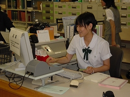

理大図書館見学・業務体験（岡山県立岡山城東高等学校編）
2006年8月18日、台風10号が九州を縦断しているあいにくの天気の中、岡山県立岡山城東高等学校の２年生３名と教員２名の５名にお越しいただき、理大図書館見学・業務体験ツアーが開催されました。
このページでは、その時の様子をちょっとだけご紹介します。
岡山理科大学図書館の３館のうちのメインである11号館図書館を見て回りました。
写真は、３Ｆの自然科学分野の書架（左）と１Ｆの電動書架（右）の見学の様子。
見学の後は、いよいよ業務体験です。
まずはカウンターにて、貸出･返却の業務をやってみます。

次は、情報検索の体験です。
“SciFinder Scholar”は、化学系データベースとしては世界で最も主要なデータベースで、化合物の情報等を調べることができます。
今回は、「ガムの宣伝で有名なキシリトール(Xylitol)と歯科(dental)」に関する文献を調べたり、構造式で検索する手順などを体験しました。
続いて、高校生と先生でペアを作って「岡山は晴れの国か？」をテーマに調査しました。
こういう統計は、理科年表を使うと便利です。
理科年表は、自然科学における種々の定数・資料を全分野にわたって集約した「自然界の辞典」です。
快晴の日が意外と少ないことに驚かれた方もいらっしゃいました。
一休みした後、雑誌の受け入れ業務の体験です。
「雑誌とは・・・」という説明のあと、端末を使って実際に受入をしました。
…この後、ILLを予定していたのですが、予定の時刻を過ぎていたので、資料をお渡しして、本日の図書館見学・業務体験を終了しました。
 最後に、図書館入口に設置されている人間国宝藤原雄先生の作品の前で記念写真を撮りました。
最後に、図書館入口に設置されている人間国宝藤原雄先生の作品の前で記念写真を撮りました。
それでは、参加者の皆さんからの感想をご紹介します。
（生徒さんより）
★貸出・返却は分かりやすかったのですが、他は多少難しさを感じました。
パソコンが上手に使えるようになることが大切（重要）なのだなと思いました。
★受入や情報検索などの貴重な体験が出来て、とても楽しかったです。
★今まで見たこともないような設備がたくさんあり、とても驚かされました。
貸出や返却等、学校とは違ったことも、いろいろさせてもらい楽しかったです。
（引率の先生方より）
★情報検索など普段なかなかできない貴重な体験ができました。
大学で最先端の研究をするには、情報検索能力が不可欠だと痛感しました。
★高校もオンライン化されてきているところですが、大学と高校の図書館の違いがよく分かり、生徒のこれからの勉強のはげみになったと思います。
参加して下さった城東高校の皆さん、本当にありがとうございました。
今回は情報検索が中心だったため、少し難しかったところもあったかと思います。
この企画自体まだ２回目で、情報検索の部分は初めてだったので、うまく説明できていたのか不安なところでしたが、アンケートや口頭で、「楽しかった」と言っていただき、館員一同ほっとしました。
ぜひ、利用者としてお越し下さいね♪
見学・業務体験ツアーのページへ
図書館のホームページへ